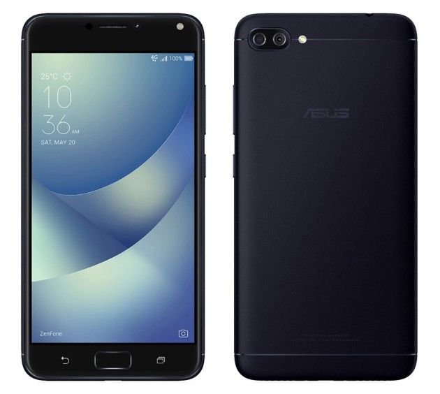
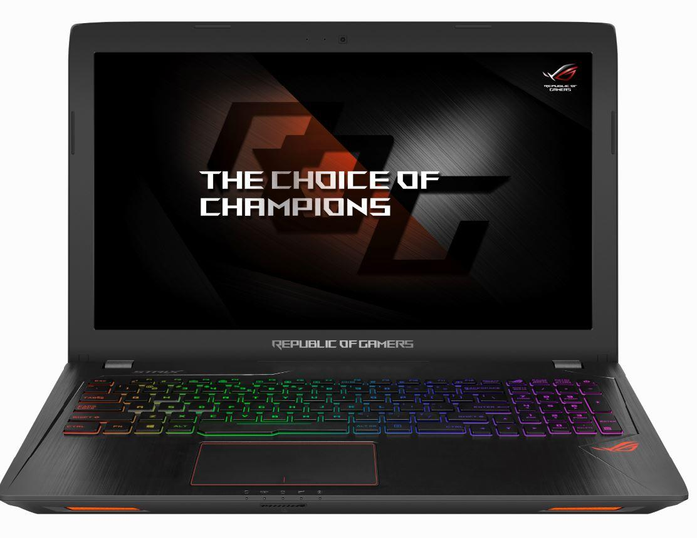
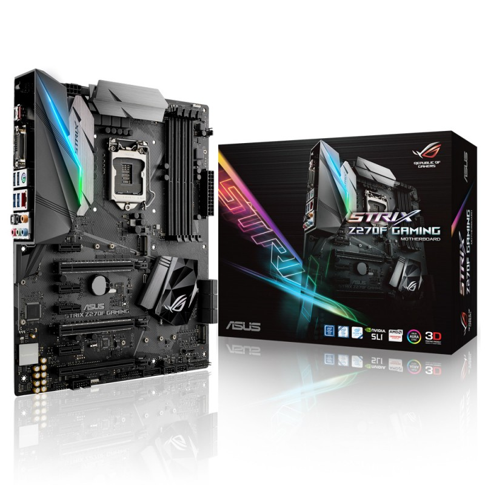
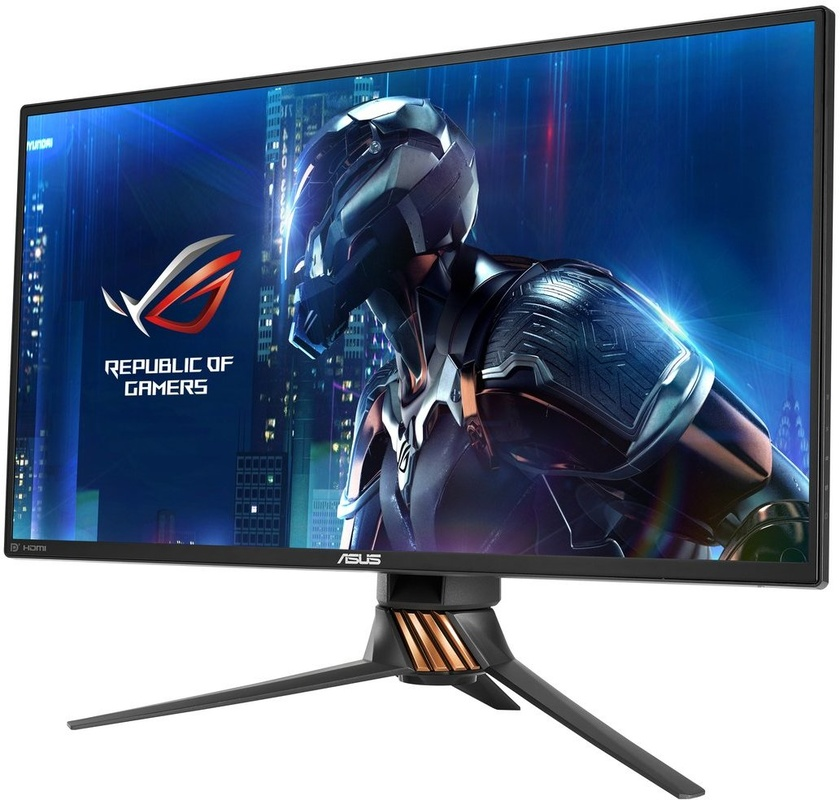

Zenfone 4 max
De ASUS ZenFone 4 Max is een smartphone die is ontworpen om lang mee te gaan en u te vergezellen op alle avonturen die het leven biedt. De hoge capaciteit 4100mAh accu met geavanceerd energiebeheer en dubbele camera's houden gelijke tred met uw actieve levensstijl en zijn altijd klaar om buitengewone momenten vast te leggen.

ROG GL553
De ROG Strix GL553 wordt geleverd met Windows 10 voorgeïnstalleerd en zorgt voor echt meeslepende gaming dankzij de 7e generatie Intel® Core™ i7 processor en afzonderlijke NVIDIA® GeForce® GTX 1050 graphics. De ROG Strix GL553 is gemaakt voor gaming en klaar voor creativiteit. Het is tijd om games en applicaties te beleven als nooit tevoren!

ROG Strix Z270F
De ROG Strix Z270F Gaming zet de trotse erfenis van de Z170 Pro Gaming-serie voort en bevat geavanceerde ROG-innovaties. ROG Strix Z270F Gaming-moederborden combineren opvallende esthetiek met hoogwaardige prestaties en ongelooflijke audio, om ongeëvenaarde spelervaringen en stijl te leveren. Ondersteuning voor de nieuwste Intel-processors en technologieën, plus exclusieve ROG-innovaties, tillen prestaties naar het volgende niveau om gamers een voordeel te geven ten opzichte van hun tegenstanders. De ROG Strix Z270F voegt opwindende energie toe aan elke beweging van elk spel en geeft gamers epische snelheid en wendbaarheid. Sluit je met de ROG Strix Z270F Gaming aan bij de Republic en domineer het speelveld!

ROG SWIFT PG258Q
Bij de ROG Swift PG258Q draait alles om snelheid — wat het de perfecte monitor maakt voor eSporten en snelle actiegames. Deze Full HD-monitor is de snelste ooit, met een native vernieuwingssnelheid van 240Hz, 1ms reactietijd en NVIDIA® G-SYNC™ technologie, voor uiterst soepele gameplay en ultrarealistische beelden. Bovendien heeft de Swift PG258Q onmiskenbare ROG-geïnspireerde ontwerpelementen die iedereen duidelijk maken dat dit geen gewone gaming-monitor is.